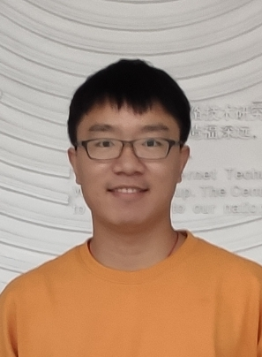

论坛介绍
本论坛由清华大学高等研究院主办。高等研究院成立于1997年，以“创新、交叉、综合”为指导思想，倡导开拓性与科学首创精神，在物理、网络空间安全、天文等相关领域中，选择对探索自然规律有深远意义的、对未来科技发展可能产生重要影响的研究方向，追求卓越，开展纯粹的基础科学研究。青年学者交叉论坛旨在为不同领域的青年学者提供交流与合作的平台，共同探讨前沿科学问题，推动学术突破与创新。
论坛议程
开幕式，08:45 - 09:00，清华大学高等研究院副院长 翁征宇教授致辞
上午议程：网络空间安全
- 09:00 - 09:25 大模型越狱攻击 - 丛天硕 AI安全
- 09:25 - 09:50 非平稳分布下的强化学习 - 罗宇 AI安全
- 09:50 - 10:15 大规模区块链共识 - 王馨 区块链安全
- 10:15 - 10:30 茶歇
- 10:30 - 10:55 半同步拜占庭容错共识分析 - 隋笑 区块链安全
- 10:55 - 11:20 两方隐私集合求并协议设计 - 张聪 密码协议安全
- 11:20 - 11:45 基于同态加密的同态秘密共享方案 - 黄泰榕 密码协议安全
下午议程：物理学
- 13:00 - 13:25 木星系的形成 - 陈卓天体物理
- 13:25 - 13:50 里德堡原子物理新进展 - 李成疏量子多体物理
- 13:50 - 14:15 湍流、Sachdev-Ye-Kitaev和路径积分 - 胡绪尧
- 14:15 - 14:30 茶歇
- 14:30 - 14:55 高阶元胞自动机生成的团簇态 - 李萌远
- 14:55 - 15:20 平带的构建及其微扰 - 常娜娜
- 15:20 - 15:45 量子纠错码的两个新结果 - 王亦许
演讲者介绍
陈卓
清华大学高等研究院 副研究员
研究领域：天体物理
王亦许
清华大学高等研究院 博士后
研究领域：量子纠错与高能理论

常娜娜
北京大学电子学院 博士后
研究领域：凝聚态物理
李萌远
清华大学高等研究院 博士后
研究领域：凝聚态物理
丛天硕
清华大学高等研究院 博士后
研究领域：人工智能安全

罗宇
清华大学计算机科学与技术系 博士研究生
研究领域：强化学习
黄泰榕
清华大学高等研究院 博士后
研究领域：全同态加密
王馨
清华大学高等研究院 博士后
研究领域：区块链共识和分布式系统
隋笑
清华大学高等研究院 博士后
研究领域：分布式共识与可证明安全理论
张聪
清华大学高等研究院 博士后
研究领域：安全多方计算
胡绪尧
清华大学高等研究院 博士后
研究领域：量子场论
王微晓
清华大学高等研究院 博士后
研究领域：粒子加速器物理
组织者介绍
李汝佳
清华大学高等研究院 博士后
研究领域：共识算法攻击、可信硬件应用
陈怡
清华大学高等研究院 博士后
研究领域：密码学与人工智能
王亦许
清华大学高等研究院 博士后
研究领域：量子纠错与高能理论
李成疏
清华大学高等研究院 副研究员
研究领域：量子多体物理